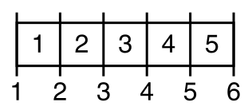

Before we move on to arrays,
I want to make sure that you have enough practice using
while loops. The while loop has a simpler
syntax than the for loop,
but using it for counter-controlled loops can often
be a little tricky, because there are more details
that you have to manage yourself. Nevertheless, sometimes,
(as in the problems below), a counted while
loop is the way to go.
Repeat Separator

Write the function named repeatSeparator(). Here are the
specifications:
Given twoStringinputs,wordandseparator, along with a thirdintinputcount, return a bigStringconsisting ofcountcopies ofword, each separated byseparator.
This is a very common algorithm, called the fencepost algorithm, because just like building a fence, you need 11 fenceposts to hold up 10 sections of fence. In the illustration shown here, the white panels will be your separators, while the vertical lines will be your words.
Here are the Javadoc tags:
@param word the first String parameter.@param separator the second String parameter.@param count the number of times to repeat word.@return a new String as described here.
Here are some examples:
repeatSeparator("Word", "X", 3) returns "WordXWordXWord"repeatSeparator("This", "And", 2) returns "ThisAndThis"repeatSeparator("This", "And", 1) returns "This"
Test your function with the Check program. If you run into
difficulty, you may want to watch one this video:

Xyz in the Middle

Here's another problem that is a little harder than it looks. Write the function
named xyzMiddle(). Here are the
specifications:
Given a String str, does "xyz" appear in
the "middle" of the string. To define middle,
we'll say that the number characters to the left and
right of the "xyz" must differ by, at most, one.
Here are the Javadoc tags:
@param str the String to examine.@return true if xyz is in the "middle" of str.
Here are some examples:
xyzMiddle("AAxyzBB") returns truexyzMiddle("AxyzBB") returns truexyzMiddle("AxyzBBB") returns false
Test your function with the Check program. If you run into
difficulty, you may want to watch this video:
Same Star Char
Now, let's look at searching again.
Write the function named sameStarChar().
Here are the specifications:
Given aString str, returntrueif for every '*' (star) in the string, if there are chars both immediately before and after the star, they are the same.
This is a little tricker than it looks. One way to look
at the problem is to see in what circumstances you should
return false. In this case, you only return
false if the characters on either side of
the * are different. That means that if there are not characters in front of,
or behind the *, then you should return true,
not false.
Here are the Javadoc tags:
@param str the input String to process.@return true if the characters before and after are the same.
Here are some examples:
sameStarChar("xy*yzz") returns truesameStarChar("xy*zzz") returns falsesameStarChar("*xa*az") returns true
Test your function with the Check program. If you run into
difficulty, you may want to watch this video:
After you Check the homework. Then head over to Codingbat and paste your code into the text area. Make sure that you are logged in when you do so, otherwise your scores won't be recorded. Note also that this handout includes three problems so that it will be worth 15 points.